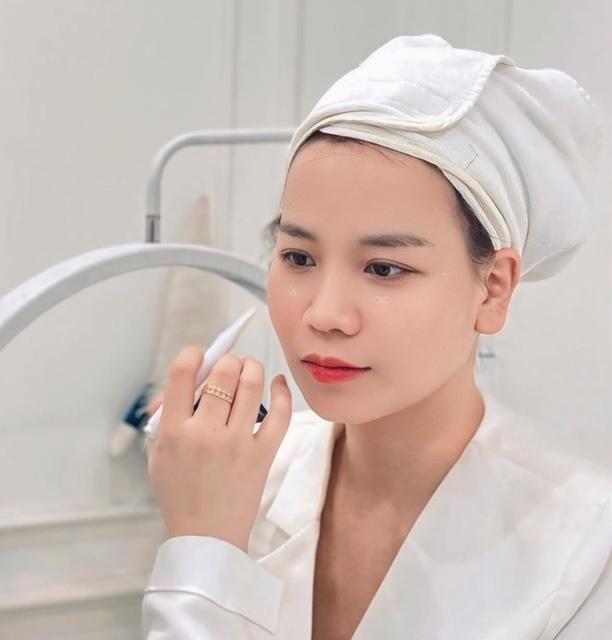

Sau Phun Môi Bao Lâu Được Đánh Son, Skincare Và Trang Điểm?
Sau khi phun môi, nhiều khách hàng háo hức muốn quay lại thói quen làm đẹp hằng ngày. Tuy nhiên, cũng có không ít người băn khoăn phun môi bao lâu được đánh son, liệu có thể skincare bình thường hay trang điểm ngay sau khi thực hiện hay không.
Đây là những câu hỏi rất phổ biến vì vùng môi sau phun cần thời gian để hồi phục. Nếu chăm sóc đúng cách trong giai đoạn đầu, môi sẽ có điều kiện hồi phục thuận lợi hơn.
Trong bài viết này, ELLY PMU sẽ giải đáp những thắc mắc thường gặp về việc đánh son, skincare và trang điểm sau khi phun môi.
Vì Sao Không Nên Vội Đánh Son Sau Khi Phun Môi?
Sau khi thực hiện, môi vẫn đang trong quá trình hồi phục tự nhiên. Việc sử dụng mỹ phẩm lên vùng môi quá sớm có thể làm tăng ma sát hoặc khiến việc vệ sinh môi trở nên khó khăn hơn.
Vì vậy, bạn nên ưu tiên làm theo hướng dẫn chăm sóc từ kỹ thuật viên thay vì quay lại ngay các bước trang điểm như bình thường.
Phun Môi Bao Lâu Được Đánh Son?
Đây là một trong những từ khóa có lượng tìm kiếm rất cao trên Google. Tuy nhiên, không có một mốc thời gian cố định áp dụng cho tất cả mọi người.
Thời điểm phù hợp sẽ phụ thuộc vào quá trình hồi phục của môi, cơ địa từng người, mức độ bong và ổn định của môi, cùng hướng dẫn của kỹ thuật viên.
Bạn chỉ nên sử dụng son khi môi đã hồi phục ổn định và được kỹ thuật viên xác nhận nếu còn băn khoăn.

Sau Phun Môi Trang Điểm Được Chưa?
Trang điểm vùng da khác trên khuôn mặt có thể khác với việc tác động trực tiếp lên môi. Khi trang điểm, bạn nên hạn chế để mỹ phẩm tiếp xúc trực tiếp với vùng môi đang hồi phục, tẩy trang nhẹ nhàng và không chà xát mạnh quanh môi.
Nếu chưa chắc chắn về sản phẩm đang sử dụng, hãy hỏi kỹ thuật viên để được tư vấn phù hợp.
Việc chăm sóc đúng sau khi phun môi sẽ giúp bạn yên tâm hơn trong quá trình hồi phục và đạt kết quả như mong muốn. ELLY PMU hỗ trợ kiểm tra tình trạng môi, tư vấn màu môi phù hợp và hướng dẫn chăm sóc sau phun môi.
Skincare Sau Phun Môi Cần Lưu Ý Điều Gì?
Skincare là bước chăm sóc da quen thuộc của nhiều người. Sau khi phun môi, bạn vẫn có thể chăm sóc da mặt nhưng nên tránh để sản phẩm skincare tiếp xúc trực tiếp với vùng môi đang hồi phục.
Bạn cũng nên không massage mạnh quanh môi, làm sạch da nhẹ nhàng và thực hiện theo hướng dẫn của kỹ thuật viên.
Những Sai Lầm Thường Gặp
Thấy Môi Đẹp Là Đánh Son Ngay
Quá trình hồi phục của môi không chỉ dựa vào cảm nhận bên ngoài. Bạn nên đợi môi ổn định và làm theo hướng dẫn từ kỹ thuật viên.
Dùng Son Để Che Màu Môi
Trong giai đoạn hồi phục, điều quan trọng hơn là chăm sóc môi đúng cách thay vì cố che màu môi bằng mỹ phẩm.
Tẩy Trang Quá Mạnh
Việc chà xát nhiều lần quanh môi có thể tạo thêm tác động không cần thiết lên vùng môi đang hồi phục.
Checklist Sau Phun Môi
Câu Hỏi Thường Gặp
Phun môi bao lâu được đánh son?
Thời điểm phù hợp sẽ khác nhau ở mỗi người. Bạn nên đợi môi hồi phục ổn định và làm theo hướng dẫn của kỹ thuật viên.
Sau phun môi trang điểm được chưa?
Bạn có thể trang điểm các vùng khác trên khuôn mặt, nhưng nên hạn chế để mỹ phẩm tiếp xúc trực tiếp với vùng môi đang hồi phục.
Sau phun môi skincare được không?
Có thể tiếp tục chăm sóc da, tuy nhiên cần tránh để các sản phẩm skincare tiếp xúc trực tiếp với môi và tuân thủ hướng dẫn của kỹ thuật viên.
Mới phun môi có được đánh son không?
Không nên vội đánh son khi môi còn nhạy cảm. Hãy chờ môi ổn định và hỏi kỹ thuật viên nếu bạn chưa chắc chắn.
Một đôi môi đẹp không chỉ đến từ kỹ thuật phun mà còn nhờ quá trình chăm sóc đúng cách sau khi thực hiện. Nếu bạn chưa biết khi nào nên đánh son hoặc quay lại các bước trang điểm, hãy để kỹ thuật viên của ELLY PMU tư vấn theo đúng tình trạng môi của bạn.
Kết Luận
Phun môi bao lâu được đánh son và sau phun môi trang điểm được chưa là những thắc mắc rất phổ biến. Thay vì chỉ quan tâm đến một mốc thời gian cụ thể, bạn nên theo dõi quá trình hồi phục của môi và làm theo hướng dẫn của kỹ thuật viên. Điều này sẽ giúp môi có điều kiện hồi phục thuận lợi và duy trì vẻ đẹp tự nhiên lâu hơn.